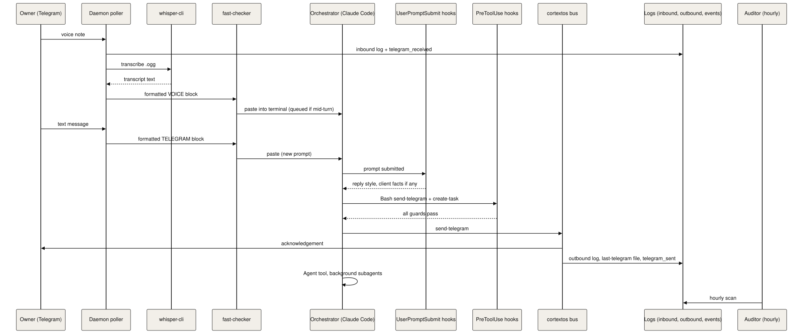

This document explains what OGL Cortex is made of, how the parts relate, and how one request travels from the owner's phone to an agent and back. Document 02 covers the execution engine, 03 the configuration files, and 04 the guardrails.
Conventions
These placeholders appear in every OGL Cortex document:
| Placeholder | Meaning |
|---|---|
$CORTEX_HOME |
The framework checkout (cloned from the upstream framework repo) |
<instance> |
The runtime instance name passed to the daemon with --instance (default default) |
$CTX_ROOT |
The runtime state folder, ~/.cortextos/<instance> |
<org> |
An organisation folder under $CORTEX_HOME/orgs/ |
<seat> |
One agent's folder, $CORTEX_HOME/orgs/<org>/agents/<seat> |
<project-slug> |
Claude Code's per-project folder name under ~/.claude/projects/ (the seat path with / replaced by -) |
OGL Cortex uses neutral role names: orchestrator, specialist, auditor, analyst and sentinel. Seat names in config examples (for example boss) are placeholders you choose.
1. Overview
OGL Cortex runs a fleet of Claude Code sessions on one host. A background program, the OGL Cortex daemon, keeps each agent session alive, feeds it the owner's Telegram messages and its scheduled jobs, and restarts it when it exits. Each agent, called a seat, is a folder of text files (rules, memory, skills) plus one Claude Code terminal session.
One seat is the orchestrator. The owner talks to it. It hands work to other seats over a file-based message bus, or to short-lived helper agents (subagents) inside its own session. Small scripts called hooks check each seat's actions before they happen, for example blocking an outgoing Telegram message that breaks the writing rules. Memory is spread across layers, from the live conversation to a vector database.
OGL Cortex has two parts:
- The framework (MIT, upstream
github.com/grandamenium/cortextos): the daemon, PTY layer, bus CLI, Telegram integration, cron scheduler, dashboard and seat templates. - The OGL layer: guard hooks, the compaction kit, memory protocol, approval gates, the ship gate, operating tools and additional skills. Sentinel scripts are an optional pattern you add yourself.
2. Component glossary
2.1 Memory
"Memory" means anything an agent can read later to recall a fact. Each layer has its own writer, reader and lifespan.
- Short-term: lives inside the current conversation or until the next restart.
- Episodic: a dated record of what happened.
- Long-term: distilled facts and rules meant to hold for months.
The command-line tool is named cortextos.
| # | Layer | What it is | Where | Kind | Writer / reader |
|---|---|---|---|---|---|
| 1 | Conversation context | The live session text. Seats restart with --continue, so one conversation can span days |
~/.claude/projects/<project-slug>/<session-id>.jsonl |
Short-term | Claude Code / seat |
| 2 | Auto-compaction window | Claude Code compresses the conversation when it passes a token limit | <seat>/.claude/settings.json key autoCompactWindow |
Short-term | Claude Code |
| 3 | STATE.md and compaction kit | A seat-written "where the work stands" file. A context-meter hook nudges the seat to update it as the window fills. After compaction a hook pastes it back in; another saves the compaction summary | <seat>/STATE.md; <seat>/.claude/hooks/ogl/compaction/ (compaction.json, meter.py, after_compact.py, save_summary.py; source harness/hooks/compaction/); summaries in <seat>/compactions/ |
Short-term bridge | Seat writes / hooks re-inject |
| 4 | Pre-compaction checkpoints | A PreCompact hook copies the last 40 messages of conversation text to a checkpoint and writes CHECKPOINT FAILED if it captured none. A SessionStart hook re-injects the newest checkpoint plus the tail of today's daily memory |
<seat>/memory/checkpoints/; hooks in <seat>/.claude/hooks/ogl/memory/ (source harness/hooks/memory/) |
Short-term bridge | Hooks only |
| 5 | Daily memory | One markdown file per day, an append-only work log | <seat>/memory/YYYY-MM-DD.md |
Episodic | Seat / SessionStart hook injects the last 3,000 characters |
| 6 | Session digests (optional, install.sh --with-digest) |
At session end and before compaction, a hook filters the transcript, runs a headless Claude to write a digest, and indexes it into a local search index | <seat>/memory/digests/; code in harness/memory/session-digest/ |
Episodic | Hook / seat on demand, or every prompt with --with-notes-recall |
| 7 | Incidents log | Narrative record of failures and the lessons drawn from them | <seat>/memory/topics/incidents.md |
Episodic | Orchestrator, auditor |
| 8 | Seat MEMORY.md | Long-term rules and lessons, read at boot | <seat>/MEMORY.md |
Long-term | Seat; the auditor may add coaching rules |
| 9 | Claude auto-memory | Claude Code's per-project memory folder: one index file plus one file per lesson. Only the index loads, capped at 200 lines | ~/.claude/projects/<project-slug>/memory/ |
Long-term | Claude Code and seat |
| 10 | ENTITIES.md | Noun index: one entry per person, place or thing, with source rank and as-of date | <seat>/ENTITIES.md |
Long-term | Orchestrator, behind a written write gate |
| 11 | Org knowledge.md | Shared facts for every seat in the org, read at boot | orgs/<org>/knowledge.md |
Long-term | Any seat |
| 12 | Knowledge base (RAG) | cortextos bus kb-query searches a Chroma vector database. Embedding model, dimensions and chunk size are set in the KB config.json; there is one collection per seat plus a shared one |
$CTX_ROOT/orgs/<org>/knowledge-base/ (config.json, chromadb/) |
Long-term | kb-ingest crons write / any seat reads |
| 13 | External knowledge stores (optional) | GBrain, an Obsidian vault mirror and a graph layer, wired in through MCP servers. The harness ships a wikilink graph builder, a graph MCP server and a Neo4j loader in harness/memory/vault-graph/ |
Owner-defined | Long-term | Owner and agents |
| 14 | Client memory graph (optional, install.sh --with-client-graph) |
A SQLite graph of clients and people with quoted, dated facts. A UserPromptSubmit hook reads it | <seat>/.claude/hooks/ogl/memory/client-graph/graph.db; code in harness/memory/client-graph/ |
Long-term | Built offline / hook reads |
| 15 | Truth-correction ledger | When a seat is caught, or catches itself, stating something false, a guarded script logs a truth_correction event |
harness/tools/emit-truth-correction.sh (calls cortextos bus log-event action truth_correction); events in $CTX_ROOT/orgs/<org>/analytics/events/ |
Episodic | Any seat / auditor scores it |
| 16 | Telegram logs | Every message in and out | $CTX_ROOT/logs/<seat>/inbound-messages.jsonl, outbound-messages.jsonl |
Episodic | Daemon and send-telegram |
| 17 | Session facts | cortextos bus recall-facts returns compaction summaries with keywords |
$CTX_ROOT/state/<seat>/memory/facts/; written by <seat>/.claude/hooks/ogl/memory/session_facts.py (PostCompact) |
Episodic | Harness hook writes / seat reads |
Short-term: layers 1 to 4. Episodic: 5, 6, 7, 15, 16, 17. Long-term: 8 to 14.
2.2 Skills
A skill is a folder with a SKILL.md file: written instructions for one kind of job, for example a morning review. Claude Code lists skill names and one-line descriptions at session start. The full text loads only when the agent invokes the skill, or when a cron prompt tells it to read the file ("Read .claude/skills/morning-review/SKILL.md and ...").
| Source | Where |
|---|---|
| Seat skills | <seat>/.claude/skills/ (seeded from the seat's template) |
| User-level skills, visible to every Claude session on the host | ~/.claude/skills/ |
| Plugin skills | Plugins enabled in ~/.claude/settings.json enabledPlugins |
| Subagent definitions | <seat>/.claude/agents/*.md, for example a read-only auditor on sonnet |
cortextos bus list-skills --format json lists the seat skills it can parse. A SKILL.md without name and description frontmatter does not appear.
2.3 Tools
| Kind | What it covers | Where configured |
|---|---|---|
| Built-in Claude tools | Bash, Read, Edit, Write, WebFetch, WebSearch, Agent (subagents) and others | <seat>/.claude/settings.json permissions.allow; launch flags (see 02) |
| MCP servers, user scope | Browser automation, workspace, design, CRM and other connectors | ~/.claude.json mcpServers |
| MCP servers, project scope | Servers needed by one seat | ~/.claude.json projects.<path>.mcpServers |
| OGL Cortex bus CLI | cortextos bus <cmd>: tasks, messages, Telegram, crons, KB, approvals, heartbeats, hooks |
src/cli/bus.ts |
| OGL Cortex CLI | cortextos <cmd>: start, stop, restart, status, add-agent, goals, crash-alert and more |
src/cli/ |
| Seat scripts | Helper scripts the seat runs through Bash | <seat>/tools/ |
| Crons | Daemon-scheduled prompts | $CTX_ROOT/.cortextOS/state/agents/<seat>/crons.json |
| LaunchAgents | macOS scheduled scripts (sentinels, backups) | ~/Library/LaunchAgents/*.plist |
| pm2 apps | cortextos-daemon, cortextos-dashboard, optional watchdogs |
$CORTEX_HOME/ecosystem.config.js |
Manage crons through cortextos bus list-crons, add-cron, update-cron and remove-cron. These commands always use the path the scheduler reads (src/bus/crons-schema.ts).
2.4 Rules
Rules come in two strengths:
- Prose rules: text the model reads and weighs.
- Mechanical rules: hooks that run code and can block a tool call.
Claude Code loads every CLAUDE.md from the working folder up to the home folder. The bootstrap files load because the boot prompt tells the seat to read them.
| File | Scope |
|---|---|
~/.claude/CLAUDE.md |
Every Claude session on the host: memory read order, ship gate, coding guidelines |
$CORTEX_HOME/CLAUDE.md |
Framework contributor notes |
<seat>/CLAUDE.md |
The seat's operating manual |
<seat>/AGENTS.md |
Session start checklist and memory protocol |
<seat>/GUARDRAILS.md |
Red-flag table and named gates |
orgs/<org>/GUARDRAILS.md |
Fleet cardinal rule, for example "label every claim Proven, Inferred or Open" |
<seat>/MEMORY.md, auto-memory index |
Lessons, read at boot |
Mechanical rules live in the hooks object of <seat>/.claude/settings.json and ~/.claude/settings.json. The reference orchestrator hook set:
| Event | Matcher | Command | What it does | Blocks? |
|---|---|---|---|---|
| PermissionRequest | ExitPlanMode | cortextos bus hook-planmode-telegram |
Sends plan approval to Telegram | Waits for reply |
| PermissionRequest | any | cortextos bus hook-permission-telegram |
Sends permission prompts to Telegram | Waits for reply |
| PreToolUse | AskUserQuestion | cortextos bus hook-ask-telegram |
Routes questions to Telegram | No |
| PreToolUse | Bash | <seat>/.claude/hooks/ogl/orwell_lint.py |
Send guard. Lints the text of any cortextos bus send-telegram against Orwell's six rules and a no-em-dash rule. One pass token per seat |
Yes |
| PreToolUse | MCP send, reply, forward, draft and post tools | <seat>/.claude/hooks/ogl/orwell_lint.py |
Same lint on email and social sends | Yes |
| PreToolUse | Bash | SURFACE_CODE_MODE=warn <seat>/.claude/hooks/ogl/shared_surface_guard.py (with surface.py, codewrites.py) |
Shared-surface guard. Blocks once on commands that change things every seat depends on: uv cache prune, global npm installs, brew upgrade, writes to ~/.claude* and shared credential folders. Code-write checks run in warn mode |
Yes, once |
| PreToolUse | Bash | <seat>/.claude/hooks/ogl/brief_guard.py |
Brief guard. create-task --assignee <other seat> must carry TASK, FILES, BAR and RETURN lines |
Yes |
| PreToolUse | Bash, Write, Edit | <seat>/.claude/hooks/ogl/future_time_guard.py |
Future-time guard. Refuses an HH:MM UTC stamp more than 3 minutes in the future in memory files, STATE.md or sends. Fails open |
Yes |
| PreToolUse | Bash | <seat>/.claude/hooks/ogl/ship_gate.py |
Ship gate. Blocks git push, gh release and similar unless a passing pentest report exists |
Yes |
| PostToolUse | any | <seat>/.claude/hooks/ogl/compaction/meter.py |
Context meter: nudge, then warning | No |
| Stop | any | cortextos bus hook-idle-flag |
Writes last_idle.flag so the daemon knows the turn ended (drives the typing indicator) |
No |
| SessionEnd | any | cortextos crash-alert |
Crash notice | No |
| PreCompact | any | cortextos bus hook-compact-telegram |
Telegram notice | No |
| SessionStart | compact | <seat>/.claude/hooks/ogl/compaction/after_compact.py |
Hands STATE.md back | No |
| PostCompact | any | <seat>/.claude/hooks/ogl/compaction/save_summary.py |
Saves the summary to compactions/ |
No |
| PreCompact | any | <seat>/.claude/hooks/ogl/memory/precompact_checkpoint.py |
Writes memory/checkpoints/latest.md |
No |
| SessionStart | any | <seat>/.claude/hooks/ogl/memory/sessionstart_inject.py |
Injects the checkpoint and the daily memory tail | No |
| PostCompact | any | <seat>/.claude/hooks/ogl/memory/session_facts.py |
Writes the summary as a session fact for recall-facts |
No |
Specialist seats carry a subset: the Telegram hooks, the send guard and the shared-surface guard. An infrastructure seat can run the shared-surface guard in strict mode by omitting SURFACE_CODE_MODE=warn. The framework templates also ship cortextos bus hook-loop-detector as a PreToolUse hook (src/hooks/hook-loop-detector.ts).
A hook script on disk does nothing until a settings file registers it.
3. Roles
3.1 Seats
A seat folder lives at orgs/<org>/agents/<seat>. cortextos bus list-agents lists registered seats. cortextos status shows which are running. A seat can exist on disk while disabled.
| Role | Template | Responsibility | Reports to |
|---|---|---|---|
| Orchestrator | templates/orchestrator |
Routes the owner's directives, briefs the owner, runs approvals, dispatches work | Owner |
| Analyst | templates/analyst |
Fleet health, metrics, upstream drift checks, improvement cycle, nightly local commits | Orchestrator; owner on critical signals |
| Auditor | templates/analyst plus auditor skills |
Hourly claim checks; writes coaching rules into a seat's MEMORY.md after a false claim | Orchestrator and analyst; owner above a severity threshold |
| Specialist | templates/agent |
One domain: infrastructure, content, outreach, code. Can run without its own Telegram bot | Orchestrator, over the bus |
| Sentinel | not a seat | Scheduled shell scripts that check the host and message the orchestrator | Orchestrator |

3.2 Non-seat actors
| Actor | What it is | Code / location |
|---|---|---|
| OGL Cortex daemon | One Node process. Starts each seat's Claude session in a pseudo-terminal (PTY), polls Telegram, runs crons, restarts crashed seats | pm2 app cortextos-daemon runs $CORTEX_HOME/dist/daemon.js --instance <instance>; src/daemon/agent-manager.ts |
| fast-checker | A loop inside the daemon, one per seat, polling every 1 s. Injects queued Telegram and bus messages into the seat's terminal, watches context size, sends the typing indicator | src/daemon/fast-checker.ts |
| Heartbeat watchdog | Part of the fast-checker. Every 50 minutes it writes an "alive, idle session" heartbeat for the seat | src/daemon/fast-checker.ts |
| Sentinels (optional, not included) | Scheduled scripts (LaunchAgents on macOS, cron or systemd timers elsewhere) that check disk, heartbeats, session liveness, daemon restart storms, domain expiry and credential identity, and send bus messages to the orchestrator. You write these for your own install | Your scheduler |
| Auth sentinel (optional, not included) | A loop that checks Claude login health | Your scheduler |
| Agent Office bridge (optional) | Copies fleet state into a visual office and carries office chat lines and Approve clicks back to the orchestrator | See 14 |
| Owner | The principal. Sends Telegram text, voice notes and photos; approves actions | <seat>/USER.md; ALLOWED_USER in the seat .env |
| Interactive Claude sessions | Claude.app or Claude Code opened by the owner on the same host. Shares ~/.claude (user hooks, skills, MCP config) with the seats; gets a seat's hooks only when opened in that seat's folder |
n/a |
4. Surfaces
| Surface | What it is | How it runs | Default reach |
|---|---|---|---|
| Telegram | The main channel to the orchestrator. Other seats can have their own bots | The daemon polls Telegram (src/telegram/poller.ts); seats reply with cortextos bus send-telegram |
Phone, anywhere |
| Dashboard | Next.js app: tasks, agents, approvals, crons, KB, skills, analytics, workflows (dashboard/src/app/(dashboard)/) |
pm2 app cortextos-dashboard. Login required (dashboard/src/middleware.ts); admin credentials in $CTX_ROOT/dashboard.env. Run a production build bound to localhost |
Local, or tailnet through tailscale serve |
| Agent Office (optional) | Visual office: seats at desks, wall boards for the needs-owner queue, Telegram thread, deploy gate, crons and projects | Local Node server on 127.0.0.1 with password login, fed by a bridge script | Local and tailnet |
| Mobile control (optional) | Phone web app and home-screen widgets: approve or reject, fleet actions, panic stop, start-all | Small HTTP API bound to the host's Tailscale IP, bearer token required, run by a LaunchAgent | Tailnet |
| Files | Deliverables sent as Telegram documents | cortextos bus send-telegram <chat_id> "<caption>" --file <path> |
Telegram |
Bind every control surface to localhost or the tailnet address and require auth on each.
5. Lifecycle of one request
This trace follows a common request: the owner sends a voice note and then a text message asking the orchestrator to produce a set of documents. Times are typical offsets from the voice note arriving.
5.1 Hop by hop
| # | Time | Hop | Code |
|---|---|---|---|
| 1 | 0 s | The daemon's Telegram poller receives the voice message, checks the sender against ALLOWED_USER, and logs telegram_received |
src/daemon/agent-manager.ts, src/telegram/poller.ts |
| 2 | 0 to 4 s | The media handler downloads the .ogg into <seat>/telegram-images/, converts it with ffmpeg, and transcribes it with whisper-cli and the model in ~/.cortextos/models/ |
src/telegram/media.ts, src/telegram/transcribe.ts |
| 3 | ~4 s | The fast-checker formats a === TELEGRAM VOICE from ... === block with the transcript and pastes it into the seat's terminal. If the seat is mid-turn, Claude Code queues it |
src/daemon/fast-checker.ts |
| 4 | ~10 s | The text message arrives and becomes the next prompt; the queued voice block rides along | fast-checker, Claude Code queue |
| 5 | ~12 s | UserPromptSubmit hooks run, if any are registered. None ship with this repository; an optional reply-style router or client-graph hook would inject its text here | <seat>/.claude/settings.json |
| 6 | Context available this turn: CLAUDE.md layers, bootstrap files read at boot, the auto-memory index, STATE.md and the SessionStart injection. The seat may also run kb-query |
n/a | |
| 7 | ~25 s | The seat runs one Bash call: send-telegram plus create-task. Every PreToolUse Bash hook checks it first: send guard, shared-surface guard, brief guard (no --assignee, so not a dispatch), future-time guard, ship gate |
<seat>/.claude/settings.json |
| 8 | ~26 s | send-telegram posts the acknowledgement, appends to outbound-messages.jsonl, overwrites $CTX_ROOT/state/<seat>/last-telegram-<chat_id>.txt, and logs telegram_sent. create-task writes a task record |
src/cli/bus.ts, src/telegram/logging.ts |
| 9 | ~60 s | The seat writes a shared brief and launches background subagents with the Agent tool | Claude Code Agent tool |
| 10 | after each tool call | PostToolUse hooks: context meter | settings.json |
| 11 | turn end | Stop hooks: idle flag (stops the typing indicator) | src/hooks/hook-idle-flag.ts |
| 12 | hourly | The auditor's audit cron scans the last 60 minutes of fleet events | auditor skill |
| 13 | nightly | The auditor's catch-rate cron reads the full outbound-messages.jsonl |
auditor script |
5.2 Sequence diagram

5.3 Component map

6. Known limitations
- Heartbeats show daemon liveness, not reasoning. The fast-checker writes an "alive" heartbeat every 50 minutes whether or not the session is working (
src/daemon/fast-checker.ts). Pair it with a check on recent tool activity or transcript growth. Any process that callscortextos bus update-heartbeatwithoutCTX_AGENT_NAMEset writes under a default name. - The default transcription model is English-only.
src/telegram/transcribe.tsdefaults toggml-tiny.en.bin, which ignores the language setting. Install a multilingual whisper model for other languages (the framework shipsscripts/install-whisper-model.sh). The inbound log stores voice notes with empty text; the transcript appears only in the session. last-telegram-<chat_id>.txtholds one message.send-telegramoverwrites it on each send (src/telegram/logging.ts). Audits that need every send must readoutbound-messages.jsonl.- Seat hooks run inside subagents. A subagent working in a seat folder inherits that seat's hooks. A hook that reads the parent transcript reports the parent's state to the subagent. Scope such hooks to the main session, or tell subagents in their brief to ignore state-file instructions.
- The auto-memory index loads at most 200 lines. Lines past the cap are dropped without error. Keep MEMORY.md files as indexes of short lines.
- Several files can describe the same thing. CLAUDE.md, AGENTS.md and the daemon's boot prompt each touch boot behaviour; FLEET-style indexes duplicate
enabled-agents.json. Document 03 lists one owner file per setting. - The framework's facts hook writes nothing.
hook-extract-factsruns at PreCompact and reads asummaryfield that Claude Code does not send at PreCompact. The harness writes session facts from PostCompact instead (session_facts.py). - A plist on disk is not a loaded job. LaunchAgents run only after
launchctl load. Checklaunchctl listfor each sentinel and backup job.
Source files
src/daemon/agent-manager.tssrc/daemon/fast-checker.tssrc/telegram/poller.ts,src/telegram/media.ts,src/telegram/transcribe.ts,src/telegram/logging.tssrc/cli/bus.tssrc/bus/crons.ts,src/bus/crons-schema.ts,src/bus/knowledge-base.tssrc/hooks/hook-loop-detector.ts,src/hooks/hook-idle-flag.ts,src/hooks/hook-extract-facts.tssrc/types/index.tsdashboard/src/middleware.tsecosystem.config.jstemplates/orchestrator/,templates/analyst/,templates/agent/